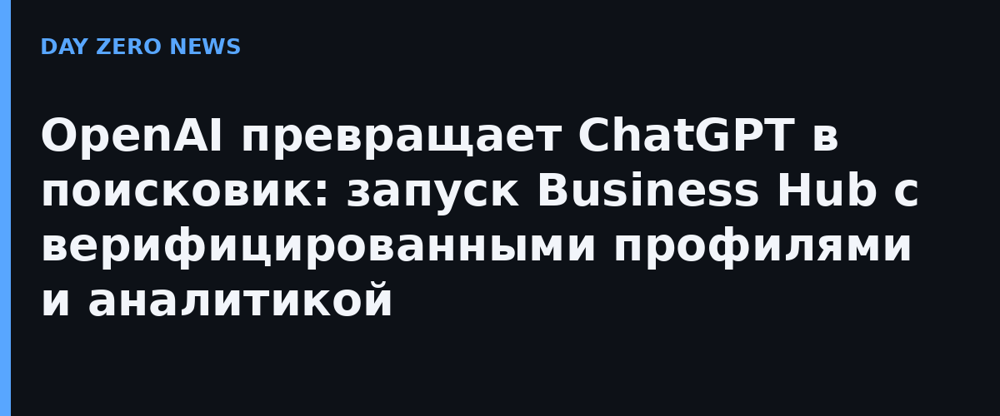

OpenAI объявила о запуске Business Hub — раздела, где компании могут создать профиль бизнеса в ChatGPT: подтвердить данные, обновлять сведения о товарах и услугах, ценах и наличии. Функция пока в бета-версии и доступна для компаний там, где работает ChatGPT. Отдельный элемент — специализированный бизнес-агент: пользователи смогут задавать ему вопросы о компании и её продуктах прямо в переписке.
В Business Hub также доступна ограниченная деловая аналитика: сколько раз пользователи видели профиль, сколько было упоминаний бизнеса в ответах ChatGPT, переходов на сайт и других метрик. Вице-президент OpenAI по монетизации Бенджи Шомер (Benji Shomair) рассказал журналистам, что компания использует «несколько способов верификации для разных типов бизнеса на разных рынках», но деталей процедуры не раскрыла.
Компания прямо называет цель: превратить ChatGPT в «платформу, где люди и бизнес встречаются через ИИ», — по мере того как всё больше людей используют нейросеть для выбора товаров и сравнения опций вместо поиска. Для OpenAI это первый шаг к тому, чтобы бизнес заходил в ChatGPT глубже, чем в рекламу: фактически к модели, где визитка компании живёт внутри ответов модели. Для рынка это сигнал, что «поисковый трафик» начинает перетекать в агентный — и SEO постепенно уступает место оптимизации под рекомендации чат-бота.
Бета уже обещает метрики, к которым рекламодатели привыкли в Google Analytics, — значит, скоро «присутствие в ChatGPT» станет таким же обязательным пунктом маркетингового чек-листа, как профиль в картах. Верификация профилей пока туманна, и это главное уязвимое место: фейковые «официальные» бренды внутри ответов модели — риск, который OpenAI придётся закрывать быстро.